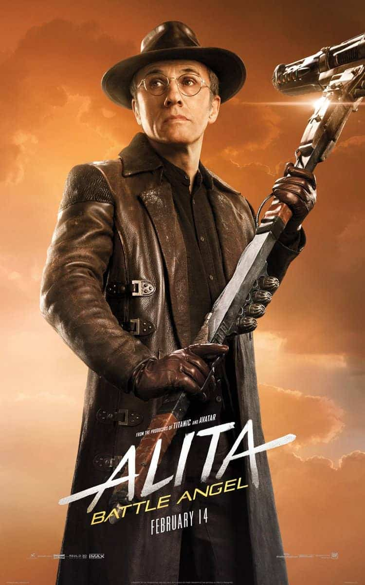
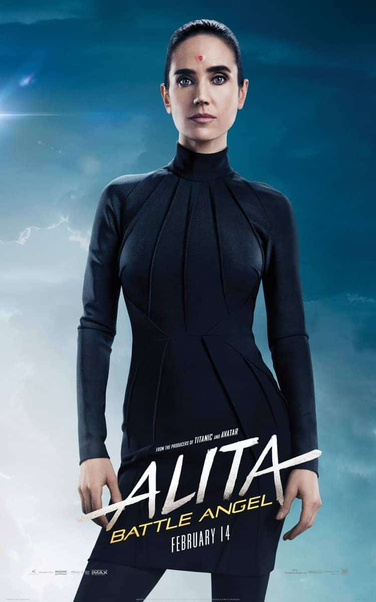
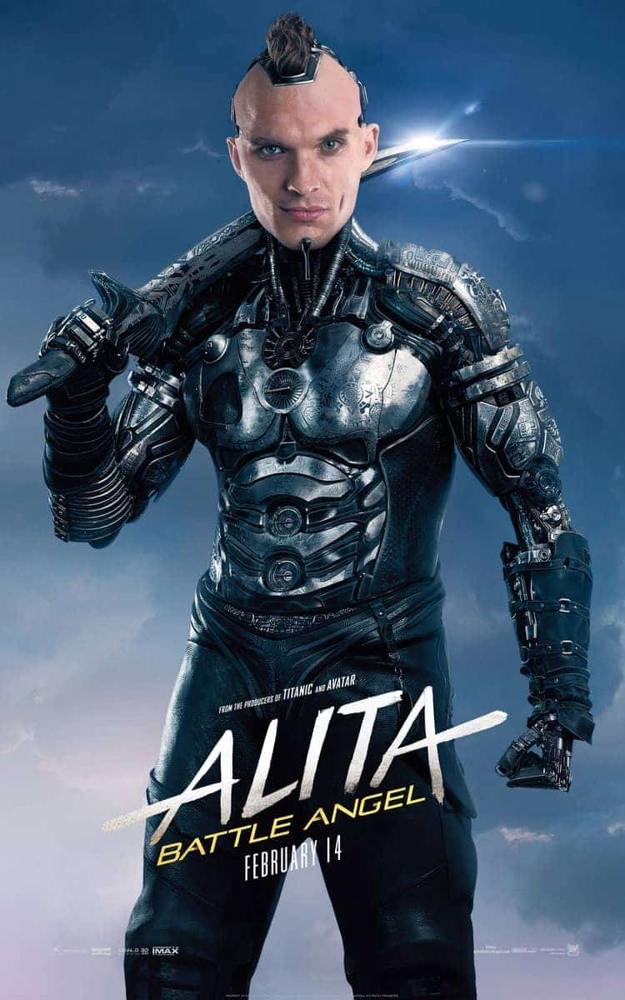
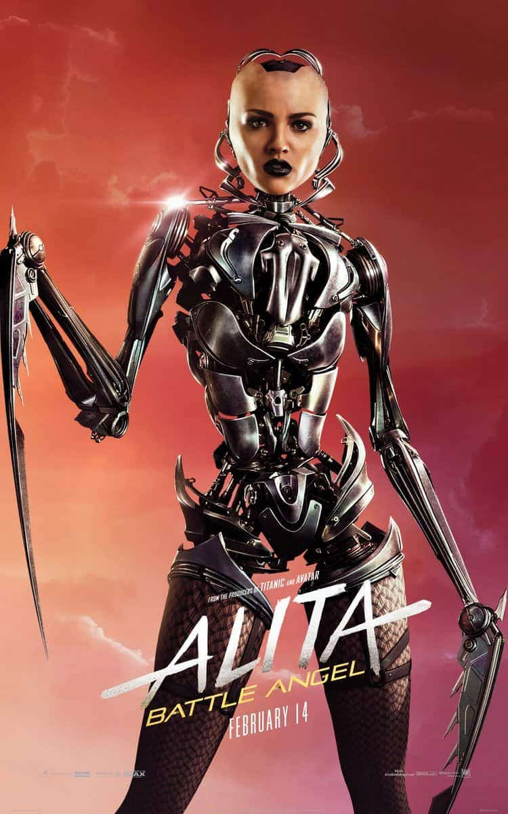
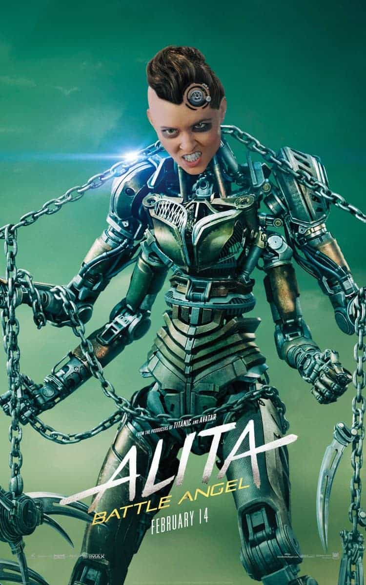
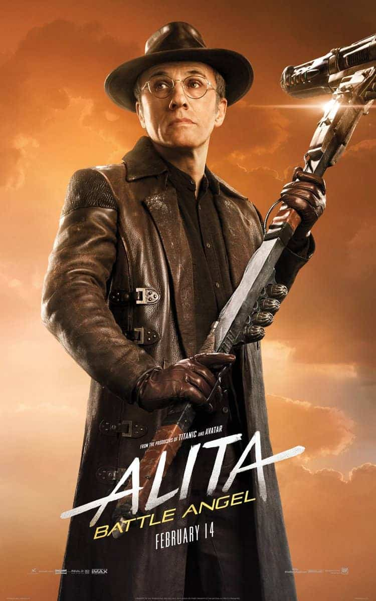
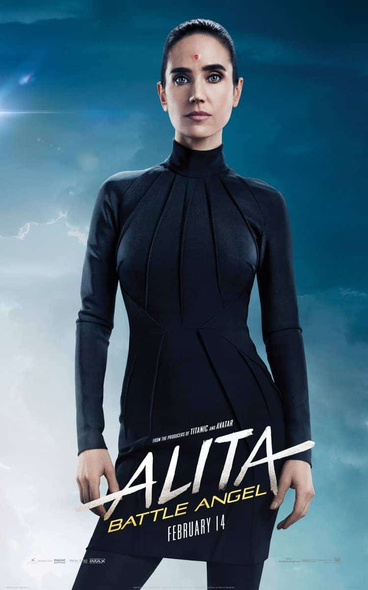
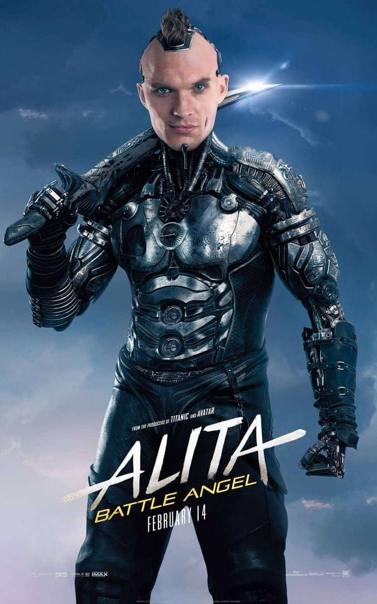
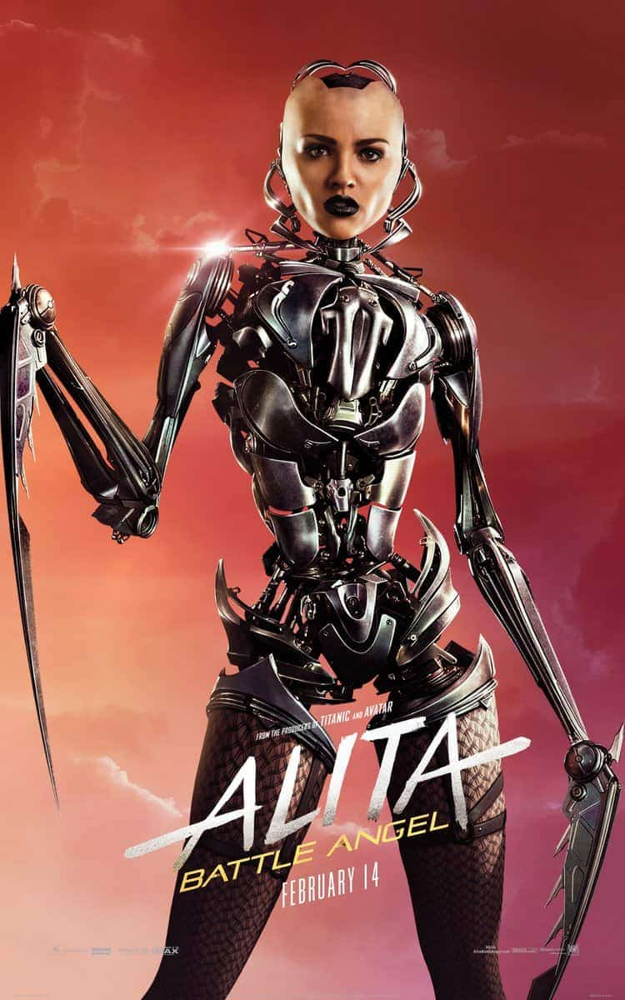
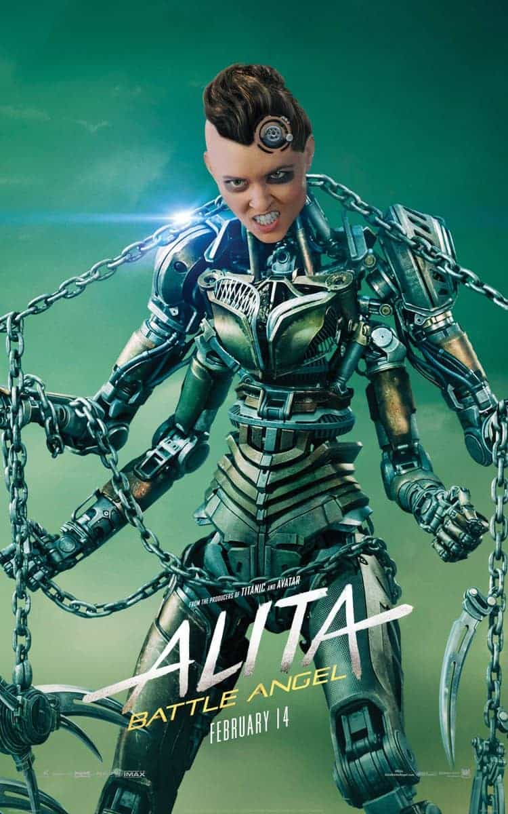

Студия Fox поделилась новыми постерами своего фильма «Алита: Боевой ангел». На них можно рассмотреть все механизированные детали основных персонажей истории.
Учитывая, что сюжет развернется в антиутопическом обществе будущего, нет ничего удивительного в том, что большая часть действующих лиц — киборги.
 









Трейлер: Алита: Боевой ангел
Российская премьера фильма «Алита: Боевой ангел» состоится 14 февраля 2019 года. Первые зрители остались от него в восторге. Напоминаем, картина служит адаптацией манги Юкито Кисиро Gunnm.